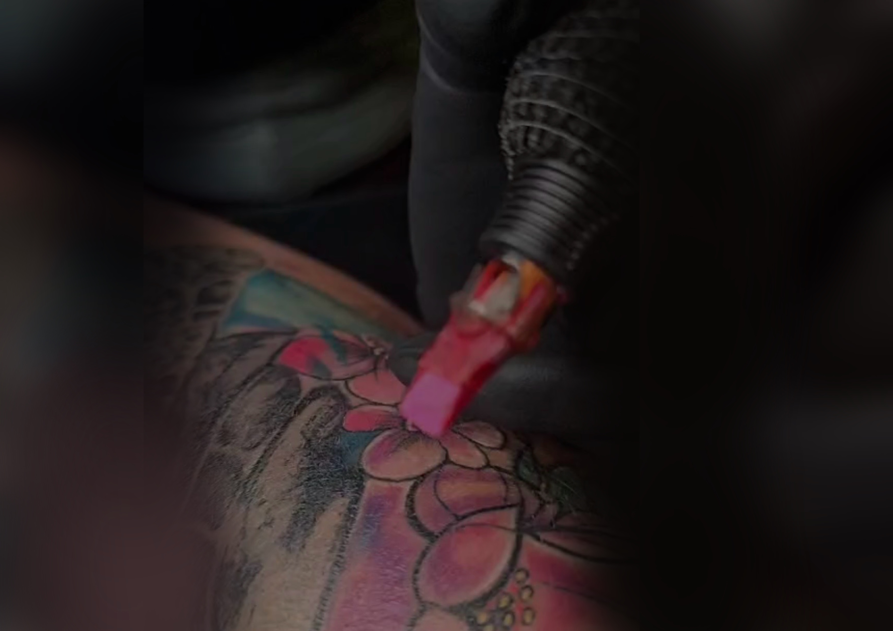
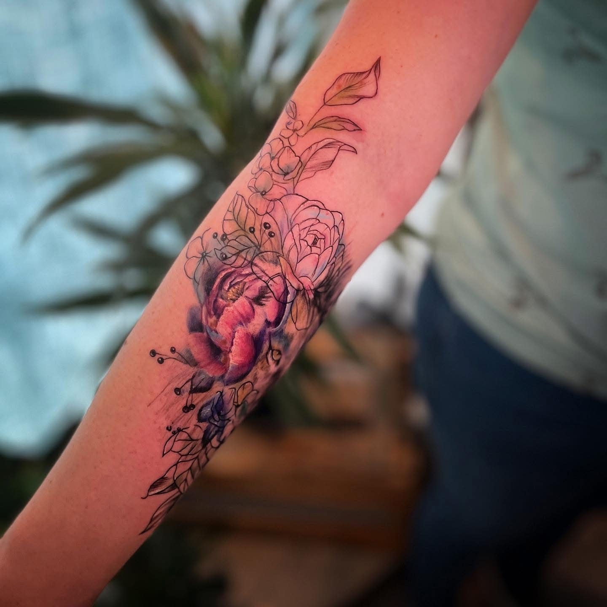
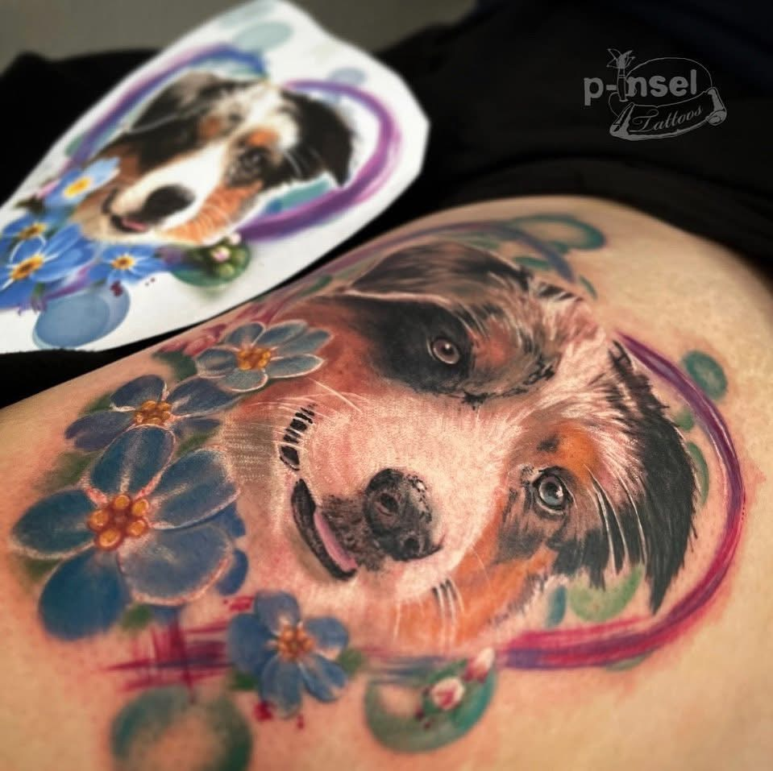
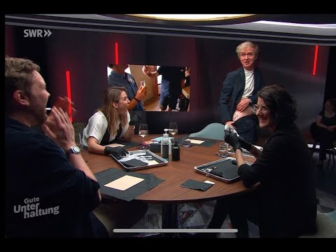

Surrealismus / Cover Up / Black & Grey
Tattoo Atelier · Bad Lippspringe
EIN TATTOO IST DAS EINZIGE WAS DU
DIR IN DEINEM LEBEN GÖNNST OHNE ES
JE WIEDER ZU VERLIEREN...
„Pia Insel ist eine außergewöhnlich talentierte Tätowiererin (…), die für ihre Fähigkeiten in den Stilen Aquarell, Illustration und Realismus bekannt ist. Ihre Arbeit ist ein Beweis für ihre Hingabe und Fähigkeit, die Vision jedes Kunden auf seiner Haut zum Leben zu erwecken."
— Tattoo Wizard






Pia Insel gleich zwei mal zu Gast beim SWR – Bei „Kaffee oder Tee" sprach sie über das Thema Organspende und bei Pierre M. Krause sorgte sie für „gute Unterhaltung".
Der SWR stellt gern Persönlichkeiten vor die besonderes machen. Was Tattoos mit Organspende zu tun haben.

Auf YouTube ansehenFür gute Unterhaltung sorgte Pia als Überraschungsgast zum Thema Freundschaft.
Pia ist eine absolut tolle Künstlerin. Mega sympathisch, ich hatte sofort vollstes Vertrauen zu ihr. Das Atelier ist klein und fein, sauber und gemütlich. Und ihre Arbeit ist mega schön geworden.
Tattoostudio mit einzigartiger, zauberhafter Atmosphäre. Pia ist super nett, herzlich, offen und unterhaltsam, ihre Insel ist ein warmer Wohlfühlort. Ich freue mich schon auf das nächste Mal!
Pia hat sich da nicht einfach nur ein Studio, sondern einen Wohlfühl-Ort aufgebaut. Super schönes Ding. Pia wie immer sehr sympathisch und gut gelaunt!
Ich vergebe Termine nur einmal pro Quartal – die Plätze sind also heißer begehrt als der letzte Parkplatz vorm Supermarkt. Damit du den nächsten Drop nicht verpasst, findest du alle Infos im Menü unter Kontakt.
Such dir vorab Referenzbilder raus, die deinen Wunschstil zeigen. Zum Beispiel Fotos vom Haustier, Blumen oder Actionfigur. Ich kopiere nichts aus dem Internet – aber Ideen sammeln darf man dort schon ;)
Sobald die Termine online gehen, schickst du mir deine Anfrage über das Kontaktformular.
Wenn alles passt, bekommst du deinen Termin bestätigt. Dann heißt es nur noch: Vorfreude genießen und den Countdown starten.
Das Atelier liegt mitten in Bad Lippspringe – direkt an der Detmolder Straße, gut erreichbar mit Auto und Bus.